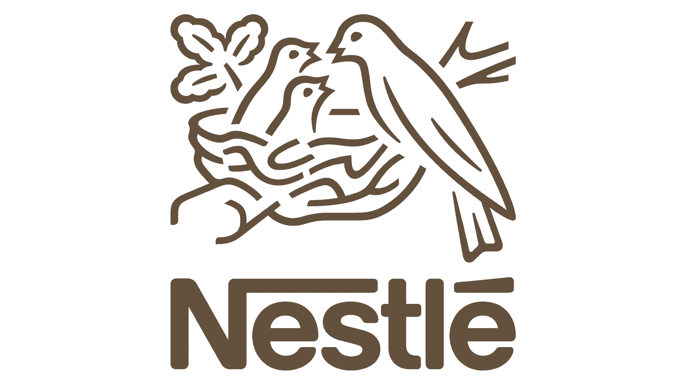

Orígenes
Nestlé fue fundada en 1866 en Vevey, Suiza, por el farmacéutico alemán Henri Nestlé, quien desarrolló un producto innovador para su época: una fórmula infantil conocida como "Farine Lactée" (Harina Láctea). Esta mezcla de leche de vaca, harina de trigo y azúcar estaba diseñada para alimentar a bebés que no podían ser amamantados. Su creación salvó la vida de muchos niños y fue el inicio de la empresa.

Misión
Mejorar la calidad de vida y contribuir a un futuro más saludable, combinando innovación, sostenibilidad y un enfoque centrado en el consumidor.
Visión
Ser la compañía de alimentos y bebidas más confiable, ayudando a las personas a llevar una vida más saludable.
Principales Categorías de Productos
- Alimentos y bebidas: Leche, café, chocolate, cereales, agua embotellada y productos congelados.
- Nutrición infantil: Fórmulas, alimentos para bebés y suplementos nutricionales.
- Cuidado de mascotas: Alimentos para perros y gatos a través de Purina.
- Helados y postres: Incluye marcas como Häagen-Dazs y Mövenpick.
- Alimentos médicos y funcionales: Productos de Nestlé Health Science diseñados para necesidades nutricionales específicas.
Compromisos y Sostenibilidad
Nestlé es reconocida por sus iniciativas para promover un impacto positivo en el planeta y en las comunidades en las que opera:
- Sostenibilidad ambiental: Compromiso con emisiones netas cero para 2050, reducción de plásticos y abastecimiento responsable de materias primas.
- Nutrición y salud: Fomentar opciones saludables y fortificar productos para combatir la malnutrición.
- Ética corporativa: Apoyo a los derechos laborales y a la mejora de la calidad de vida en comunidades agrícolas.
Valores Fundamentales
Los valores de Nestlé son los cimientos de su cultura organizacional y se reflejan en todas sus actividades.
Respeto por las personas
- Nestlé valora a sus empleados, clientes y comunidades, y se esfuerza por mejorar su calidad de vida a través de productos y acciones responsables.
- Se compromete con condiciones laborales justas y fomenta el desarrollo profesional dentro de la organización.
Respeto por la Diversidad
- Como empresa global, Nestlé celebra la diversidad cultural y se asegura de que sus productos reflejen las preferencias locales, respetando las tradiciones y costumbres de cada región
Respeto por el medio ambiente
- Nestlé actúa de forma responsable para proteger el planeta. Esto incluye compromisos de sostenibilidad, como alcanzar cero emisiones netas para 2050, reducir el uso de plásticos y garantizar el abastecimiento ético de materias primas.
Enfoque en la calidad
- La calidad está en el corazón de Nestlé. Cada producto está diseñado para cumplir con los estándares más altos de seguridad, sabor y nutrición.
Compromiso con la salud y el bienestar
- Nestlé promueve opciones alimenticias que mejoren la salud de los consumidores, abordando problemas como la obesidad y la malnutrición.